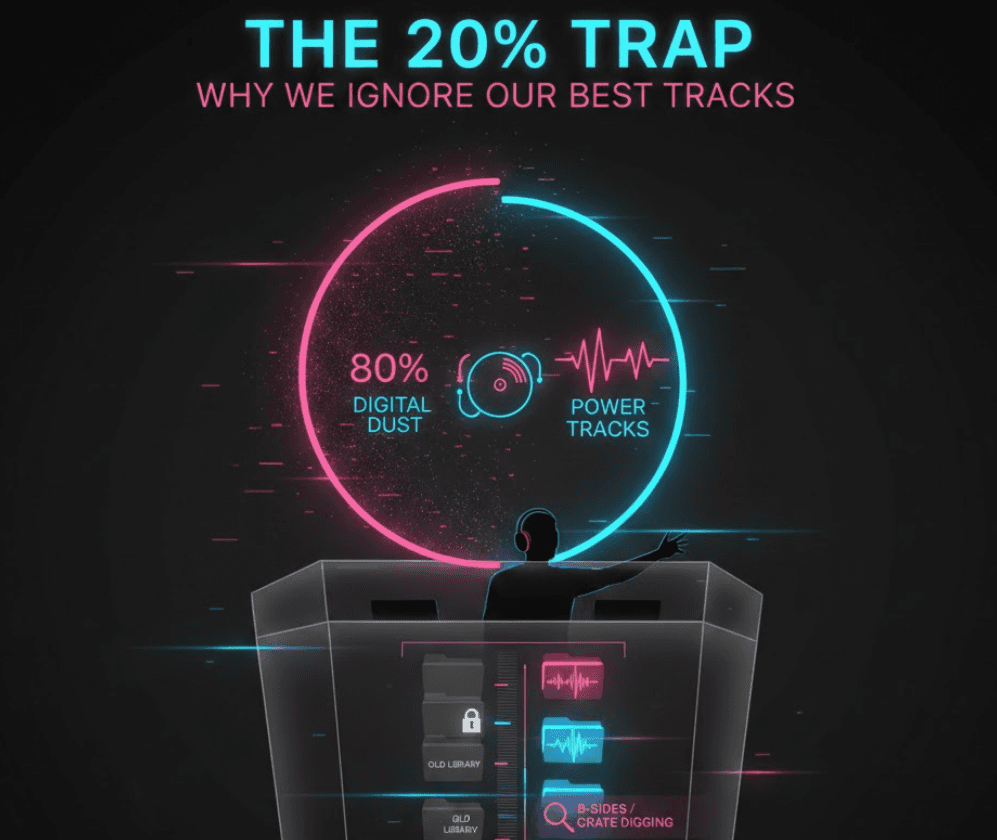
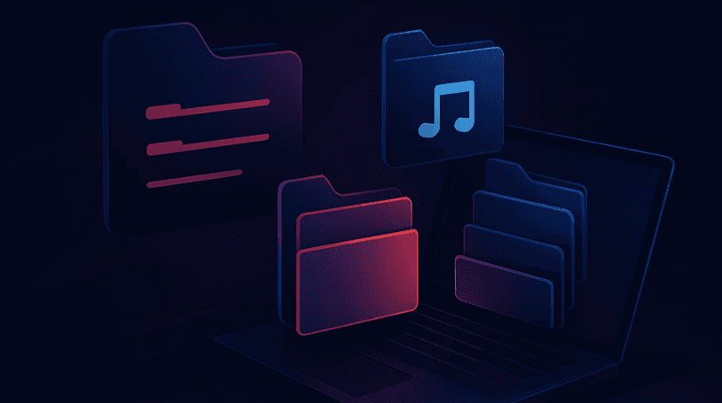
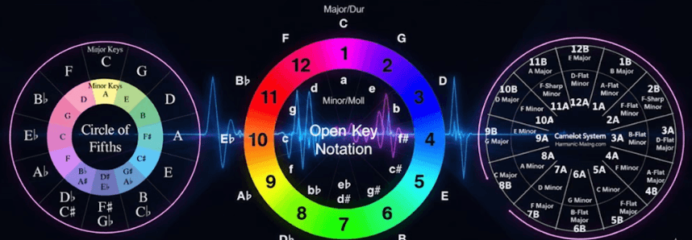

Rediscovering the forgotten magic in your existing collection is the secret to standing out as a DJ in 2026. I’ve spent countless hours behind the decks only to realize my best transitions often come from tracks I’d forgotten I even owned.
In this article, I’ll share techniques on how to maximize your library by digging out those hidden bangers.
What You’ll Learn
- Why most DJs only play a fraction of their library and how to break that cycle.
- Strategies for organizing DJ library folders to prioritize discovery over storage.
- The role of harmonic matching and global trends in resurfacing tracks that fit perfectly with modern hits.
- How PulseDJ.com acts as an AI co-pilot to surface your personal "hidden gems" in real-time.
The 20% Trap: Why We Ignore Our Best Tracks

It is a common phenomenon in the booth: we tend to stick to the same "power tracks" that we know work, leaving roughly 80% of our hard-earned collection gathering digital dust.
In 2026, DJ music curation isn't just about buying what's on the Beatport Top 100; it’s about deep-diving into your own hard drive to find that B-side from three years ago that suddenly makes sense with today’s underground sound.
As a DJ, I’ve found that the sheer volume of music we own can be paralyzing. If you aren't actively finding tracks for DJ sets from your older folders, your sound can start to feel stagnant. The goal of digital crate digging is to treat your existing library like a fresh record store, where the most valuable finds are the ones you already paid for.
Check out these DJing Tips and Tricks to further improve your skills.
Meeting Your AI Co-Pilot: PulseDJ.com
This is where PulseDJ.com changes the game. It isn't just another library manager; it’s an AI co-pilot that sits alongside your main software - whether you use Serato, Rekordbox, Traktor, Virtual DJ, or Algoriddim djay PRO - and analyzes what you are playing in real-time to assist in your DJ music curation .
PulseDJ uses an intelligent dual-system to help you find those hidden gems you’ve forgotten about:
- Pulse & MyStyle Suggestions: Pulse analyzes the last three tracks you played to suggest what should come next based on millions of parties. Meanwhile, the MyStyle feature learns your unique "DNA" by reading your playing history. It finds tracks you have played in the past that fit the current vibe, effectively digging through your crates for you while you focus on the crowd.
- Global Hot 100 Charts : The software integrates live charts from different countries, allowing you to see how your "hidden gems" stack up against what is moving dancefloors globally right now. This helps in finding tracks for DJ sets that bridge the gap between your personal style and current hits.
It’s super easy to use, and sits next to your main DJ mixing software, listening to your selection, and suggesting tracks in real time. Best of all - it's completely free - Download PulseDJ Now!
Organizing DJ Library for Maximum Visibility

If your library is a mess, your creativity will be too. Modern music discovery for DJs starts with a clean foundation that allows software to do its job effectively.
- The "One Drop" Rule: Stop renaming files by hand. Use one intake folder and let your software handle the metadata so you can spend more time listening and less time typing.
- Smart Playlists: Set up rules based on "Date Added" or "Year" to force yourself to look at tracks you haven't played in over 12 months.
- Genre-Fluid Tagging: Instead of rigid genres, tag by energy level (1–10) or "vibe" (e.g., "Dark", "Sunrise", "Peak Time") to ensure you can find the right mood regardless of the BPM.
For more deep dives into technical setups, I always recommend checking out the latest guides on organizing DJ library structures over at the PulseDJ blog.
The Power of Harmonic Matching

One of the most effective ways to find a "hidden gem" is to look for a perfect harmonic match. A track you haven't played in years might be the exact musical counterpart to a brand-new release. By focusing on the Camelot key, you can create transitions that make the crowd feel like they’re listening to a single, evolving piece of music.
Read my full guide on How To Mix Harmonically for DJs
Furthermore, a track that didn't work in 2022 might be exactly what the dancefloor wants now because of a shift in popular sub-genres. I often compare global charts to my older folders to find tracks with similar instrumentation. If a specific style of House is trending, I’ll dig into my deep history to find something unique that fits that sonic profile but hasn't been overplayed by every other DJ on the circuit.
Discovery Method
Traditional Manual Digging
AI-Assisted Library Discovery
Slow; requires manual listening.
Instant; suggestions appear in real-time.
Accuracy
High risk of key/BPM clashing.
High; matches BPM and harmonic keys.
Diversity
Often limited to "safe" tracks.
Surfaces "forgotten" tracks from your DNA.
Effort
Hours of preparation.
"In-the-mix" inspiration.
Learn How To Find Song Keys to further level up your harmonic mixing!
Start Digital Crate Digging with PulseDJ.com

Digital crate digging doesn't have to be a chore you do on a Tuesday afternoon. With the right tools, it becomes an organic part of your performance.
By integrating PulseDJ into your workflow, you ensure that you never "black out" or run out of ideas during a set. The software highlights compatible tracks in green, showing you exactly which hidden gem in your library is a perfect harmonic match for your current deck.
If you want to breathe new life into your collection and start finding tracks for DJ sets that no one else is playing, it’s time to let AI do the heavy lifting. You can learn more about optimizing your workflow at PulseDJ.com or explore more pro tips on our blog .
Ready to rediscover your library? Download PulseDJ for free and see what's been hiding in your crates.
‹ How to Find the Best New Music for DJs - Mastering the PulseDJ Hot 100